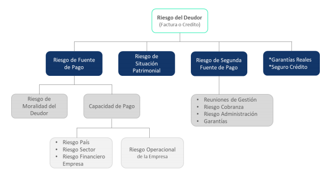

El fondo Táctico de Sartor invierte principalmente en instrumentos privados de deuda a corto
plazo, incluyendp:
Inversión en facturas diversificadas por pagador y monto que cuentan con
variadas fuentes de
pago y pólizas de seguro.
1.000 + Facturas
Inversión promedio por factura~ CLP 12.6 millones
Fondo cuenta con un contrato marco que mitigan los riesgos operativos a
través de
covenants y obligaciones financieras
que evitan la morosidad de la cartera.
Adicionalmente, el fondo cuenta con una póliza de seguro de crédito por
UF
13.000.000
que garantiza el 90% del capital
mas intereses de algunas facturas seleccionadas. La aseguradora es Solunion
(Mapfre), la
cual tiene una clasificación de
riesgo internacional AA-.
Inversión en créditos de corto plazo con garantías hipotecarias
y/o avales
con
patrimonios
de respaldo
~100 Créditos
Ticket promedio por crédito~ CLP 500 millones
En las garantías destacan, derechos sobre propiedad, contratos, activos y/o
los
correspondientes avales
Composición de la cartera
Patrimonio administrado (En CLP Millones)
Control de riesgo

Glosario
Facturas: alternativa de financiamiento a través de la venta de cuentas por cobrar. Le
permite a las
empresas
obtener capital de trabajo de corto plazo sin necesidad de endeudarse y a una tasa de descuento
competitiva.
Crédito de corto plazo: tipo de crédito otorgado a empresas que se debe devolver en un
periodo de
tiempo muy
corto, generalmente menor a 1 año.
Pólizas de seguro: póliza de garantía que asegura el cumplimiento de las obligaciones
de la empresa
deudora
Garantías Hipotecarias: vivienda o bien inmueble ofrecido como garantía para el pago de
una deuda.
En caso de
no pago, el prestamista puede hacerse del bien para venderlo y recuperar el financiamiento otorgado.
Avales: garantía de una persona natural o empresa que respalda el pago de un crédito.
En caso de no
pago, el
prestamista puede reclamar al aval el pago de esta.
Tasa de Morosidad: Porcentaje de facturas o créditos que están con un cierto nivel de
atraso en el
pago de sus
obligaciones